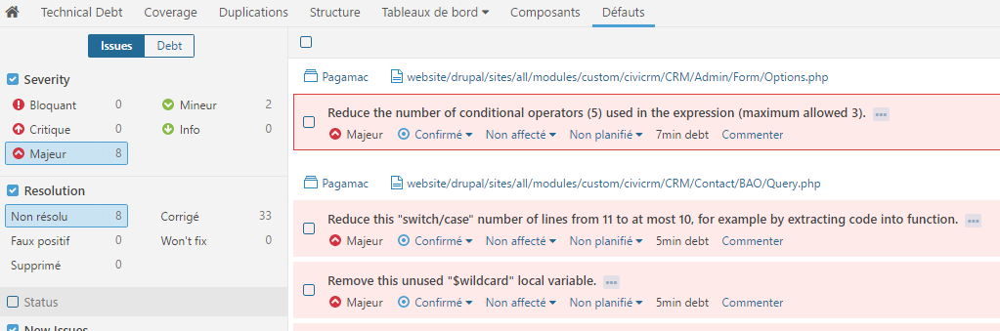
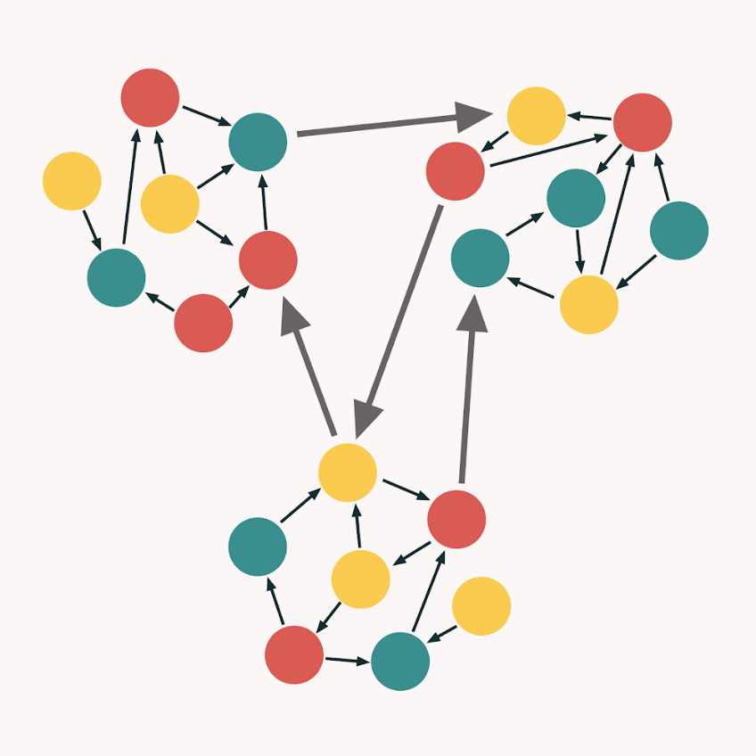

Рефакторинг
приложений на JavaScript
и не только
Алексей Золотых
Алексей Золотых
| @zolotyh | |
| telegram | @zolotyh |
| aazolotyh@gmail.com |

Рефакторинг клиентского кода или как отрефакторить миллион строк кода и не сойти с ума
Один из разработчиков берется за дело
Прошло всего 3 недели...
Вот мердж-реквест с рефакторингом
Мы не можем это смерджить...
— А что не так?!
Ты сделал код хуже!
1. Слово «Рефакторинг»
Пошлый
Низкий в нравственном отношении, безвкусно-грубый, лишённый идейных интересов и запросов.
Пошьлыи
- старинный, исконный
- искони принадлежавший
- прежний, обычный
Математика
Refactoring
Re: used to add the meaning "do again", especially to verbs
Математика
Refactoring
factoring: x2 + 4x + 3 => (x + 3)(x + 1)
Изначально в IT
This thesis denes a set of program restructuring operations (refactorings) that support the design, evolution and reuse of object-oriented application frameworks
1990 William F. Opdyke,
Изначально в IT
This thesis denes a set of program restructuring operations (refactorings) that support the design, evolution and reuse of object-oriented application frameworks
1990 William F. Opdyke,
by Martin Fowler, with Kent Beck

Refactoring is a controlled technique for improving the design of an existing code base. Its essence is applying a series of small behavior-preserving transformations, each of which "too small to be worth doing".
Refactoring is a controlled technique for improving the design of an existing code base. Its essence is applying a series of small behavior-preserving transformations, each of which "too small to be worth doing".
План
- Найти «Код с душком»
- Применить рефакторинг
- Повторять первые 2 пункта, пока не станет хорошо
Код с душком
function Card({ card }) {
if (card.type === 'news') {
return <NewsCard card={card} />;
}
if (card.type === 'post') {
return <PostCard card={card} />;
}
if (card.type === 'user') {
return <UserCard card={card} />;
}
return <DefaultCard card={card} />;
}
Рефакторинг
const CARDS = {
news: NewsCard,
post: PostCard,
user: UserCard,
}
function Card({ card }) {
const Component = CARDS[card.type] || DefaultCard;
return <Component card={card} />
}
Принципы
- Постоянный процесс
- Небольшие изменения
- Правило туриста
Список основных рефакторингов
Список codesmells
многое уже есть в IDE

SonarQube — наше все!
Платный, есть бесплатная версия
Работаем с мердж-реквестами
О проблемах в реальном времени

Альтернативы
Современность
code refactoring is the process of restructuring existing computer code changing the factoring without changing its external behavior
Wikipedia, 2023
Современность
code refactoring is the process of restructuring existing computer code changing the factoring without changing its external behavior
Wikipedia, 2023
Было: меняем структуру эволюционно и улучшаем код
Стало: все время все переписываем, потому что так сказал Фаулер
Автоматический рефакторинг на AST
Подмена понятий и плохое описание задачи
Переписать на хуки != отрефакторить
Ошибка 1: недопонимание
Разное понимание задачи
Разработчик: нужно переписать на хуки
Ревьювер: нужно сделать код чище
2. Проблема с самооценкой и долгий путь не туда
Прошло всего 3 недели...
Ошибка 2: оставили одного
Нужно чаще синхронизироваться
3. Плохой и хороший код
Код для людей
Programs must be written for people to read, and only incidentally for machines to execute.
Код для людей
Programs must be written for people to read, and only incidentally for machines to execute.
Плохой жесткий диск
Плохой CPU и мало Memory
Кошелек Миллера и Система 1 от Канемана
Нужно писать простой, понятный и поддерживаемый код
Проще сказать, чем сделать
Давайте на примере!
Single layer of abstraction (SLA)
Каждый метод должен быть написан в терминах одного уровня абстракции
Успею ли я к началу выступления (через час)?
const distance = map.getDistance();
const speed = car.getSpeed(speed);
return distance/speed <= 1
Добавим передачу и обороты вместо скорости
# передаточные числа
const GEARS = {
'1': 6.55,
'2': 3.09,
'3': 1.71,
'4': 1.00,
'R': 7.77
}
# считаем дистанцию
const distance = getDistance();
# параметры авто
const rotationSpeed = getCurrentRotationSpeed();
const gear = getCurrentGear();
const radius = getWheelRadius();
# успеем ли?
return (distance * 1000 * GEARS[gears]) /
(rotationSpeed * 60 * Math.PI * R) <= 1
KISS
Keep it simple, stupid
— А точно ли это проблема?
const distance = map.getDistance();
const speed = car.getSpeed(speed);
return distance/speed <= 1
class Car {
getSpeed(){...}
}
const car = new Car();
const distance = map.getDistance();
const speed = car.getSpeed(speed);
return distance/speed <= 1
MIMC
More Is More Complex
Больше строчек - дороже поддержка
Нужно просветление, чтобы понять
Пример:
Должен существовать один и, желательно, только один очевидный способ сделать это.
Принципы хорошо работают после
const CARDS = {
news: NewsCard,
post: PostCard,
user: UserCard,
}
function Card({ card }) {
const Component = CARDS[card.type] || DefaultCard;
return <Component card={card} />
}
Ошибка 3: субъективность
Субъективная оценка
Ссылка на принципы в качестве аргумента
Low Coupling (низкая связанность) и
High Cohesion (высокое зацепление)

1. Идеальная ситуация

2. Все в одном

3. Неправильные границы
4. Мастер SOLID

Мерить через метрики AST
Tracking health over debt
Как можно найти?
- Сложность кода (cyclomatic complexity vs cognitive complexity)
- Текучесть (code churn)
- Кол-во зависимостей
- Размер файла в строках
- Покрытие тестами
Chidamber & Kemerer object-oriented metrics suite (shorturl.at/kOS28)
- WMC Weighted Methods Per Class
- DIT Depth of Inheritance Tree
- NOC Number of Children
- CBO Coupling between Object Classes
- RFC and RFC´ Response for a Class
- LCOM(4) Lack of Cohesion of Methods
Code Complexity
$ npx code-complexity . --sort=score --limit=3
┌──────────────────────────────┬────────────┬───────┬───────┐
│ file │ complexity │ churn │ score │
├──────────────────────────────┼────────────┼───────┼───────┤
│ src/cli.ts │ 103 │ 8 │ 824 │
├──────────────────────────────┼────────────┼───────┼───────┤
│ test/code-complexity.test.ts │ 107 │ 7 │ 749 │
├──────────────────────────────┼────────────┼───────┼───────┤
│ .idea/workspace.xml │ 123 │ 6 │ 738 │
└──────────────────────────────┴────────────┴───────┴───────┘
Ошибка 4: метрики
Не было метрик
Ошибки
- Разное понимание задачи
- Работали без плана
- Не синхронизировались
- Не было дизайна
- Не было метрик
Выводы
- Правило туриста
- Автоматическое ревью: Sonar, SonarLint, eslint
- Синхронизация по пониманию задач
- Слон по частям
- Договариваемся о дизайне
- Метрики
- Не спорим о принципах
PS: Про автотесты
Пирамида и трофей
Спасибо!
Отзыв
Слайды
Алексей Золотых — @zolotyh